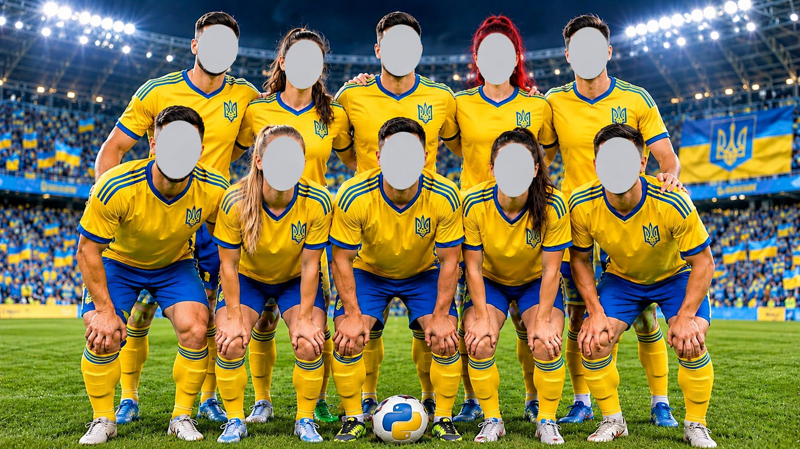

Хто ми як команда
Наша команда з 10 людей. Натисніть на учасника, щоб побачити профіль.

Проведіть пальцем вліво-вправо, щоб побачити всю команду.
Зображення згенеровано за допомогою ChatGPT.
Профіль з’явиться тут.
Наша команда з 10 людей. Натисніть на учасника, щоб побачити профіль.

Проведіть пальцем вліво-вправо, щоб побачити всю команду.
Зображення згенеровано за допомогою ChatGPT.
Профіль з’явиться тут.